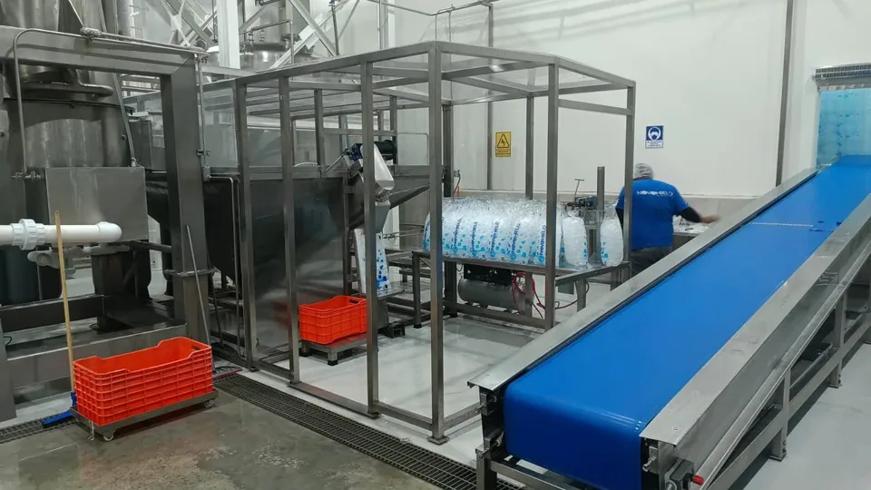

ARCHIVO FOTOGRÁFICO / PERFIL CORPORATIVOUna biblioteca
Una biblioteca
de trabajo real.
66 fotografías seleccionadas del perfil corporativo de ISC, reunidas en 18 series por cliente, intervención y especialidad.
GALERÍA COMPLETACada fotografía
Cada fotografía
tiene una historia.
Elige una serie para ver su registro fotográfico. Las portadas mantienen una distribución uniforme y las imágenes se muestran completas en el visor.
SERIE SELECCIONADA 01 / 18
03 FOTOGRAFÍASHolcim México · Precalentador
3 fotografías de esta serie. Selecciona una imagen para verla a tamaño ampliado.
ÍNDICE VISUAL
Selecciona una portada para cambiar de galeríaExplora las 18 series.
No hay series con ese criterio. Prueba otra palabra o categoría.
Las fotografías corresponden a trabajos y especialidades documentadas por ISC. CFE, CAFINCO e IMSS permanecen exclusivamente en el directorio de clientes.
EXPERIENCIA APLICADAMás allá de la foto:
Más allá de la foto:
conoce el alcance.
En las fichas de proyectos encontrarás cliente, lugar y descripción de la intervención.
Ver proyectos detallados ↗